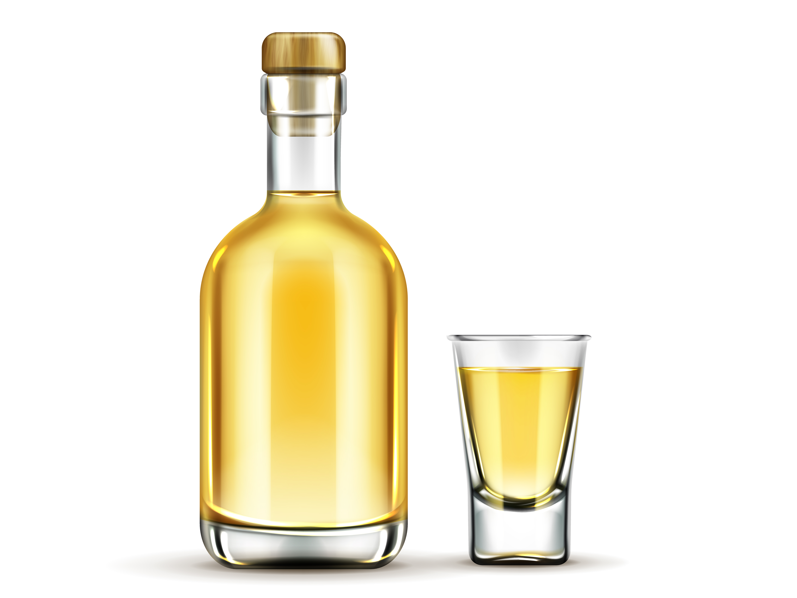

El amaretto es un licor dulce originario de Saronno, en el norte de Italia. El amaretto combina el dulzor de los huesos de albaricoque con el amargo de las almendras, los cuales están acompañados por alcohol puro, azúcar caramelizada y la esencia de diecisiete plantas y frutas aromáticas, entre las que destaca de forma especial la vainilla, aunque tiene también melocotón (durazno) y cereza. Su graduación alcohólica suele rondar los 25 grados y no supera en ningún caso los 30.
